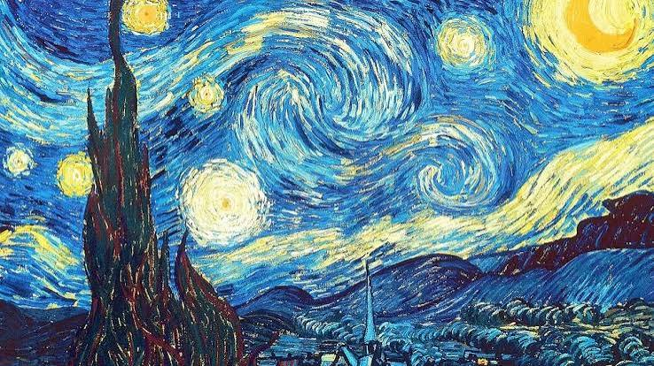
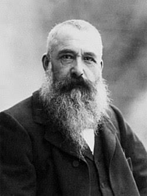
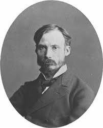
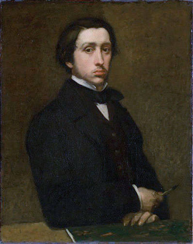
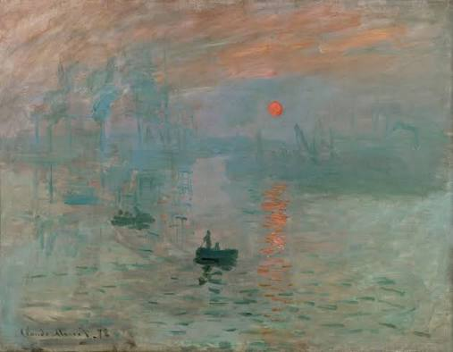
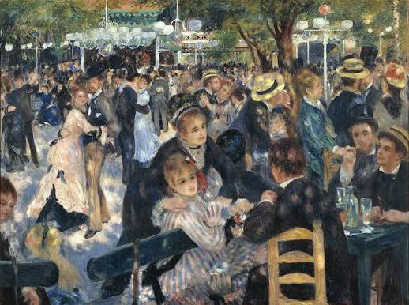
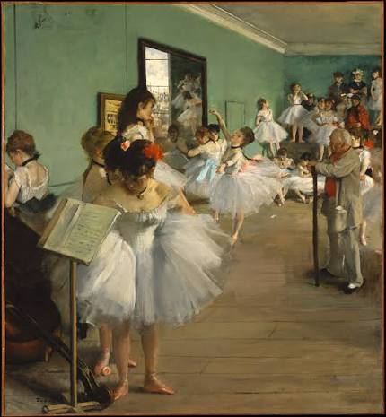

Impresionismo

El Impresionismo fue un movimiento artístico que surgió en Francia durante la segunda mitad del siglo XIX. Se desarrolló como una nueva forma de representar la realidad, dando mayor importancia a la luz, el color y las sensaciones visuales que produce un momento determinado.
Los artistas impresionistas buscaban capturar las impresiones de la naturaleza y la vida cotidiana. Para ello utilizaron pinceladas rápidas y visibles, colores luminosos y, en muchas ocasiones, pintaron al aire libre para observar directamente los cambios de iluminación.
Características del Impresionismo
-
Captura de la luz
- Representación de los cambios de iluminación.
- Estudio de la luz natural.
- Variación de los colores según la hora del día.
-
Pinceladas visibles
- Pinceladas rápidas y espontáneas.
- Uso de trazos cortos y separados.
- Menor preocupación por los detalles exactos.
-
Uso del color
- Colores brillantes y luminosos.
- Uso de colores puros.
- Mezclas visuales producidas por la cercanía de colores.
-
Pintura al aire libre
- Observación directa de la naturaleza.
- Representación de paisajes.
- Estudio de los efectos atmosféricos.
-
Vida cotidiana
- Representación de actividades comunes.
- Escenas de parques, calles y jardines.
- Personas disfrutando de actividades sociales.
-
Impresión visual
- Captura de un momento específico.
- Enfoque en la sensación visual de la escena.
- Representación de movimiento y atmósfera.
Artistas representativos

Claude Monet (1840–1926)
Claude Monet fue uno de los principales representantes del Impresionismo y un artista interesado en estudiar los cambios de luz y color en la naturaleza. Sus pinturas representan paisajes, jardines, ríos y escenas urbanas. Una de sus obras más conocidas es Impresión, sol naciente, pintura que contribuyó a dar nombre al movimiento.

Pierre-Auguste Renoir (1841–1919)
Renoir fue un pintor francés conocido por sus representaciones de personas, reuniones sociales y escenas de la vida cotidiana. Su estilo se caracteriza por el uso de colores cálidos, pinceladas suaves y una sensación de alegría y movimiento. Sus obras suelen mostrar ambientes luminosos y personajes en momentos de convivencia.

Edgar Degas (1834–1917)
Edgar Degas fue un artista francés que destacó por representar escenas relacionadas con el movimiento, especialmente bailarinas, ensayos de ballet y actividades cotidianas. Sus obras muestran composiciones originales, perspectivas poco convencionales y un interés por capturar gestos y movimientos naturales.
Obras destacadas

Impresión, sol naciente - Claude Monet
Esta pintura representa un paisaje portuario al amanecer. Monet utiliza colores suaves, pinceladas rápidas y una iluminación característica para transmitir la atmósfera del momento.

Baile en el Moulin de la Galette - Pierre Auguste Renoir
La obra muestra una reunión social al aire libre en París. Destaca por la representación de la luz entre los árboles, el movimiento de las personas y el ambiente alegre de la escena.

La clase de danza - Edgar Degas
Esta obra representa a bailarinas durante una clase de ballet. Degas muestra diferentes posiciones y movimientos, destacando la naturalidad de los gestos y la organización del espacio.